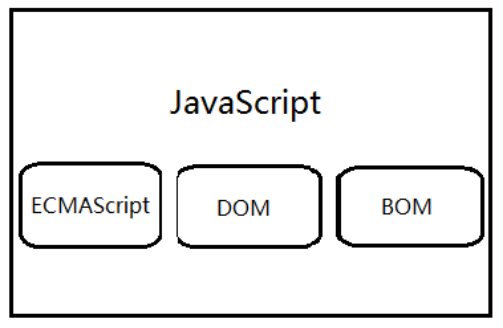

内容简介
1. JavaScript的发展
JavaScript由布兰登·艾奇（Brendan Eich）发明，于1995年出现在Netscape。
Netscape与SUN合作，将LiveScript改为JavaScript，造就了这个强力的WEB页开发工具。
21世纪初，Google公司的网上产品使Ajax一时兴起，JavaScript重新找到自己的定位。
如今，web3.0时代，各种JavaScript的功能框架层出不穷，各种前端应用愈加丰富多彩。
2. JavaScript的作用
表单数据合法验证
页面特效
动态页面
数值计算
3. JavaScript特点
- JavaScript是一种基于对象和事件驱动的客户端脚本语言,并具有相对的安全性,主要用于创建交互性较强的动态页面。
- 基于对象的语言：它能运用自己创建的对象
- 事件驱动:采用事件驱动方式,并执行指定的操作
- 解释性语言:是一种解释性脚本语言,无须专门的编译器进行编译
- 简单性 ：它是一种基于java基本语句和控制流之上的简单而紧凑的设计；其次它的变量类型是采用弱类型，未使用严格数据的数据类型。
- 安全性 ：它不允许访问本地硬盘，不能将数据存入到服务器上，不允许对网络文档进行修改和删除，只能通过浏览器实现信息浏览或动态交互，对数据的操作是安全的。
- 动态性：可以直接对用户或客户的输入做出响应，无需经过web服务程序。
- 跨平台性 ：与操作环境无关，只依赖于浏览器本身，只要计算机支持实现了JavaScript的浏览器，它就可被正确执行。
4. JavaScript的组成

- (1)ECMAScript主要描述了以下内容：
- 语法、变量和数据类型、关键字、保留字、运算符、逻辑控制语句、对象
- ECMAScript定义了脚本语言的所有属性、方法和对象，因此在使用Web客户端脚本语言编码时一定要遵循ECMAScript标准。
- (2)浏览器对象模型BOM
- 它可以对浏览器窗口进行访问和操作。利用BOM的相关技术，Web开发者可以移动窗口、改变状态栏以及执行一些与页面内容不相关的操作。
- (3)文档对象模型DOM
- DOM是Document Object Model（文档对象模型）的简称，是HTML文档对象模型（HTML DOM）定义的一套标准方法，用来访问和操纵HTML文档。
- DOM由w3c定义，最新的浏览器都支持第一级和第二级DOM，通过JavaScript可以重构整个HTML文档。